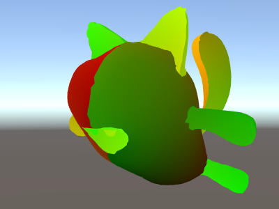
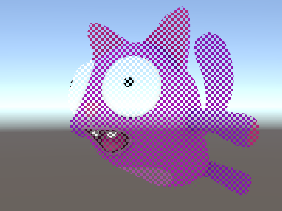

着色器语义
顶点着色器输入语义
主要的顶点着色器函数（由# pragma指令表示顶点）需要在所有的输入参数的语义。这些对应于单独的网格数据元素，如顶点位置，法线网格，纹理坐标。查看更多细节的顶点程序输入。
这里有一个简单的顶点着色器，它以顶点位置和纹理坐标作为输入。像素着色器将纹理坐标作为一种颜色。
Shader "Unlit/Show UVs"
{
SubShader
{
Pass
{
CGPROGRAM
#pragma vertex vert
#pragma fragment frag
struct v2f {
float2 uv : TEXCOORD0;
float4 pos : SV_POSITION;
};
v2f vert (
float4 vertex : POSITION, // vertex position input
float2 uv : TEXCOORD0 // first texture coordinate input
)
{
v2f o;
o.pos = UnityObjectToClipPos(vertex);
o.uv = uv;
return o;
}
fixed4 frag (v2f i) : SV_Target
{
return fixed4(i.uv, 0, 0);
}
ENDCG
}
}
}

片段着色器输出语义
最常见的一个片段（像素着色器输出色彩，）有sv_target语义。上面例子中的片段着色器确实是这样的：
fixed4 frag (v2f i) : SV_Target
也可以返回具有输出的结构.。上面的片段着色器也可以这样重写，它会完全一样：
struct fragOutput {
fixed4 color : SV_Target;
};
fragOutput frag (v2f i)
{
fragOutput o;
o.color = fixed4(i.uv, 0, 0);
return o;
}
从片段着色器返回结构主要是用于着色，不只是返回一个单一的颜色。由片段着色器输出支持的附加语义如下。
SV_TargetN: Multiple render targets
SV_Target1，SV_Target2，等：这些额外的颜色由着色器编写。这是用在渲染成多个渲染目标一次（称为多个渲染目标的渲染技术，或MRT）。SV_Target0是SV_Target相同。
SV_Depth: Pixel shader depth output
通常的片段着色器不重写Z缓冲区的值，和一个默认的值是从规则的三角形光栅化用。然而，对于某些影响，它对输出每像素的自定义Z缓冲区深度值是有用的。
多GPU这让一些深度缓存优化，注，所以不要重写Z缓冲区的值没有一个好的理由。SV_Depth招致的成本取决于GPU架构，但总的说来是相当类似的α测试的成本（使用HLSL内置clip()功能）。渲染着色器，修改深度毕竟规则不透明的着色器（例如，通过使用透明度测试渲染队列。
输出的深度值必须被定义为float类型的。
Vertex shader outputs and fragment shader inputs
顶点着色器需要输出最终的剪辑空间位置的一个顶点，使GPU知道屏幕上的栅格化，在什么样的深度。这个输出需要有SV_Position语义，并成为一个float4类型。
其他输出（“interpolators”或“varyings”）的顶点着色器是什么您需要产生特定的着色器。从顶点着色器输出的值将在渲染三角形的面内进行插值，每个像素的值将被传递给片段着色器。
许多现代GPU真的不在乎这些变量的语义；但是一些老的系统（最值得注意的是，Shader Model 2的GPU在Direct3D 9）有关于语义的特殊规则：
TEXCOORD0 TEXCOORD1等，用来表示任意高精度数据如纹理坐标和位置。
Color0和COLOR1语义在顶点输出和片段输入是低精度的，0–1范围内的数据（如简单的颜色值）。
最好的跨平台支持，顶点输出和片段输入如TEXCOORDn语义。
Interpolator count limits
有限制多少插值变量可用于总传递信息从顶点到片段着色器。极限取决于平台和GPU，和一般原则：
Up to 8 interpolators: OpenGL ES 2.0 (iOS/Android), Direct3D 11 9.x level (Windows Phone) and Direct3 9 shader model 2.0 (old PCs). Since the interpolator count is limited, but each interpolator can be a 4-component vector, some shaders pack things together to stay within limits. For example, two texture coordinates can be passed in one float4 variable (.xy for one coordinate, .zw for the second coordinate).
Up to 10 interpolators: Direct3D 9 shader model 3.0 (#pragma target 3.0).
Up to 16 interpolators: OpenGL ES 3.0 (iOS/Android), Metal (iOS).
Up to 32 interpolators: Direct3D 10 shader model 4.0 (#pragma target 4.0).
其他特殊语义
屏幕空间像素位置: VPOS
片段着色器可以接收被呈现为一个特殊的VPOS语义的像素位置。此功能只存在从Shader Model 3，所以着色器需要有 #pragma target 3.0 汇编指令。
在不同的平台上的屏幕空间位置输入基础类型不同，所以为了获得最大的可移植性是使用UNITY_VPOS_TYPE型（它将float4在大多数平台上，并在Direct3D 9 float2）。
此外，使用像素位置的语义难以有剪辑的空间位置（SV_POSITION）和相同的顶点VPOS片段结构。因此顶点着色器应该将剪辑空间位置作为单独的“输出”变量输出。看到下面的示例着色：
Shader "Unlit/Screen Position"
{
Properties
{
_MainTex ("Texture", 2D) = "white" {}
}
SubShader
{
Pass
{
CGPROGRAM
#pragma vertex vert
#pragma fragment frag
#pragma target 3.0
// note: no SV_POSITION in this struct
struct v2f {
float2 uv : TEXCOORD0;
};
v2f vert (
float4 vertex : POSITION, // vertex position input
float2 uv : TEXCOORD0, // texture coordinate input
out float4 outpos : SV_POSITION // clip space position output
)
{
v2f o;
o.uv = uv;
outpos = UnityObjectToClipPos(vertex);
return o;
}
sampler2D _MainTex;
fixed4 frag (v2f i, UNITY_VPOS_TYPE screenPos : VPOS) : SV_Target
{
// screenPos.xy will contain pixel integer coordinates.
// use them to implement a checkerboard pattern that skips rendering
// 4x4 blocks of pixels
// checker value will be negative for 4x4 blocks of pixels
// in a checkerboard pattern
screenPos.xy = floor(screenPos.xy * 0.25) * 0.5;
float checker = -frac(screenPos.r + screenPos.g);
// clip HLSL instruction stops rendering a pixel if value is negative
clip(checker);
// for pixels that were kept, read the texture and output it
fixed4 c = tex2D (_MainTex, i.uv);
return c;
}
ENDCG
}
}
}

Face orientation: VFACE（面向）
一个片段着色器可以接收一个变量，该变量指示被渲染的表面是否面向相机，或者面向相机.。这是有用的，当渲染几何，应该是可见的双方-经常使用的叶子和类似的薄对象。vface语义的输入变量将包含前置三角形的积极价值，和背面的负价值。
此功能只存在于Shader Model 3起，所以着色器需要有 #pragma target 3.0 汇编指令。
Shader "Unlit/Face Orientation"
{
Properties
{
_ColorFront ("Front Color", Color) = (1,0.7,0.7,1)
_ColorBack ("Back Color", Color) = (0.7,1,0.7,1)
}
SubShader
{
Pass
{
Cull Off // turn off backface culling
CGPROGRAM
#pragma vertex vert
#pragma fragment frag
#pragma target 3.0
float4 vert (float4 vertex : POSITION) : SV_POSITION
{
return UnityObjectToClipPos(vertex);
}
fixed4 _ColorFront;
fixed4 _ColorBack;
fixed4 frag (fixed facing : VFACE) : SV_Target
{
// VFACE input positive for frontbaces,
// negative for backfaces. Output one
// of the two colors depending on that.
return facing > 0 ? _ColorFront : _ColorBack;
}
ENDCG
}
}
}

Vertex ID: SV_VertexID
顶点着色器可以接收一个变量，该变量具有“顶点数”作为无符号整数.。这是非常有用的当你想获取额外的每从纹理或computebuffers顶点数据。
此功能只存在于DX10（Shader Model 4）和glcore / OpenGL ES 3，所以着色器需要有 #pragma target 3.5 汇编指令。
Shader "Unlit/VertexID"
{
SubShader
{
Pass
{
CGPROGRAM
#pragma vertex vert
#pragma fragment frag
#pragma target 3.5
struct v2f {
fixed4 color : TEXCOORD0;
float4 pos : SV_POSITION;
};
v2f vert (
float4 vertex : POSITION, // vertex position input
uint vid : SV_VertexID // vertex ID, needs to be uint
)
{
v2f o;
o.pos = UnityObjectToClipPos(vertex);
// output funky colors based on vertex ID
float f = (float)vid;
o.color = half4(sin(f/10),sin(f/100),sin(f/1000),0) * 0.5 + 0.5;
return o;
}
fixed4 frag (v2f i) : SV_Target
{
return i.color;
}
ENDCG
}
}
}